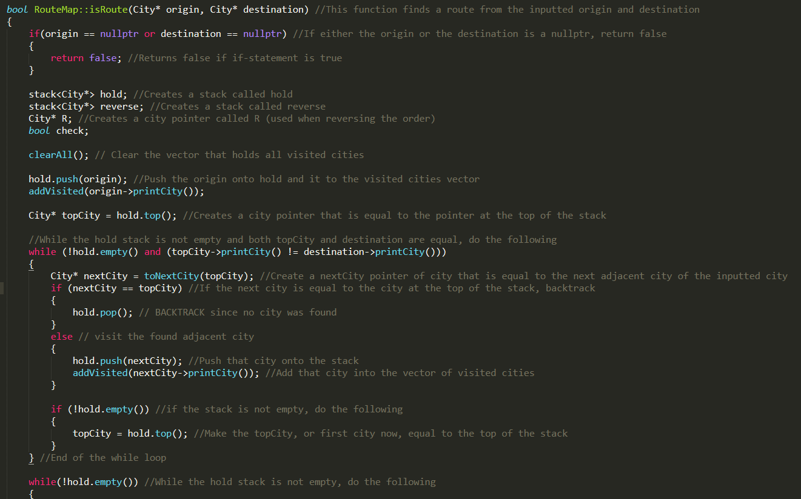
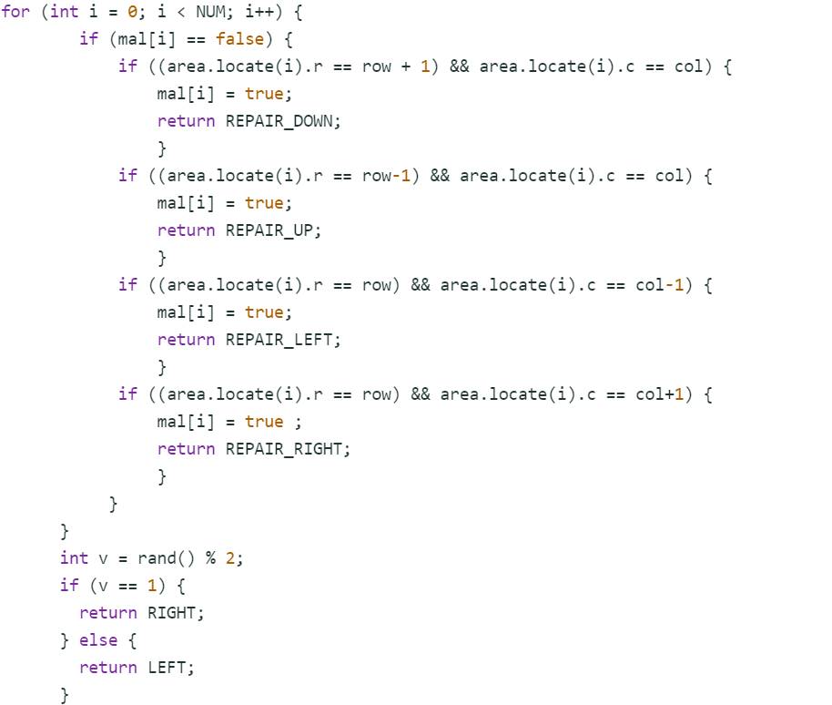

Flight Route
- Designed and created a program using C++ with an interface and implementation that found a direct route from a city to theend destination
- Used stack to find the shorter route from one city to another and informed user if no route exists from the starting city to thedestination
Space Junk Collector
- Programmed and debugged existing code using C++ to improve the efficiency of robots picking up space junk in a large board
- Built the robots to cover specific areas of the map to maximize efficiency by up to 70% when picking up junk
- Coded helpers that fixed robots in case of a robot malfunction and parsed through data focused on improving run-time andefficiency of code